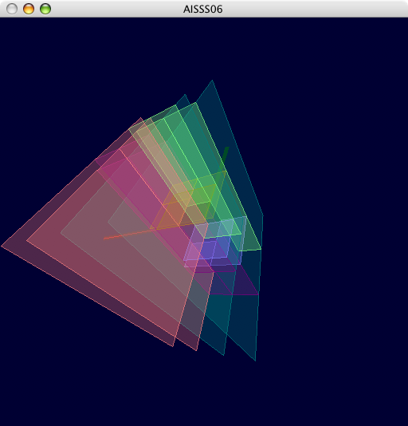
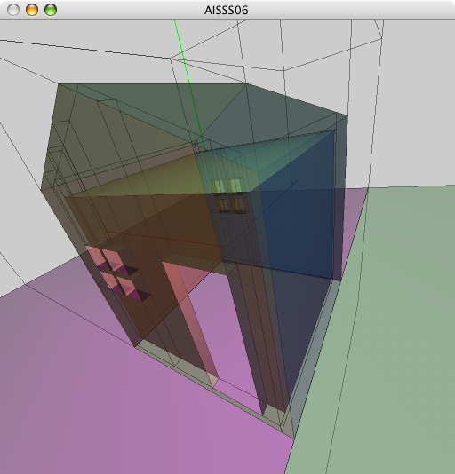
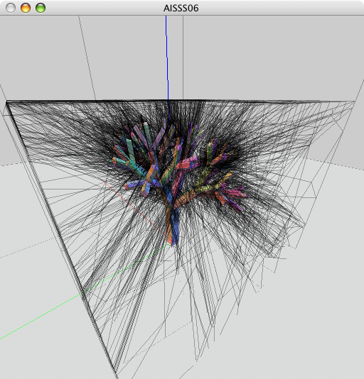
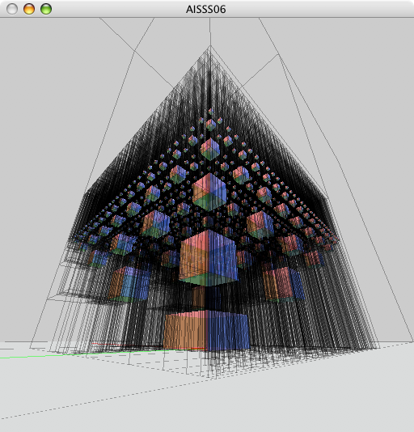
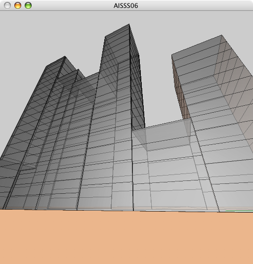
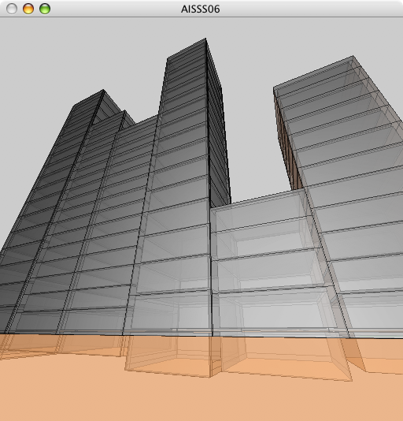
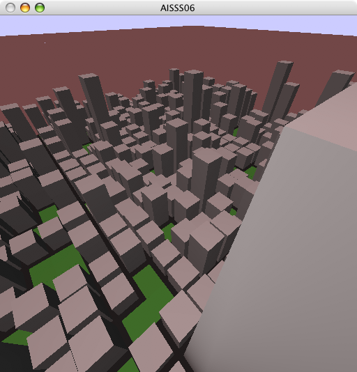
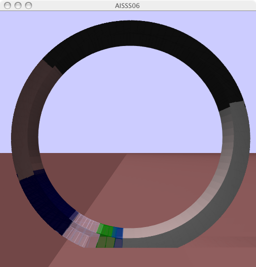

 Finally getting somewhere. Still some issues with back-to-front rendering.
 Aehm, YESS!!! Almost there, NOT. But Bsp-tree merging seems to work correctly, though.

Uhm, yeah. Let me present the first procedural geometry picture. Or should I say functional geometry? Whatever. The black lines are the outlines of the Bsp-cells. I though it would be funny to generate some plants also. But obviously Bsp-trees, despite their name, are not that well suited to organic shapes.
 Ah, the beauty of functional languages (Ocaml here). We just define our own DSL, et voila:
I'm in awe. No, really. Ocaml is a great language for tasks like these (rapid prototyping and stuff). I was able to go from zero to what you see here in about two weeks. Not having to care about all the low-level stuff just makes things a whole lot easier. I'll probably never go back to C++, now that I have seen the light. Haskell was a close second to Ocaml, and is probably next on my list. Especially for things like monads and type classes.


Hm, getting there. These two snapshots show the LoD mechanism in action. In the first picture, the towers consist of only the hull. In the second picture, each level of a tower has been hollowed out to form some kind of room. Windows and doors could be added in a next step.
Unfortunately, the LoD-mechanism is neither dynamic, nor view-dependent and can only be changed globally. Bsp-tree generation, however, is quite fast (< 1 sec for this scene). At least, this allows the LoD to be changed at interactive framerates.
 Where's spiderman?
 Huzzah! Added materials (see above) and changed to a monadic approach. The code now even becomes readable: